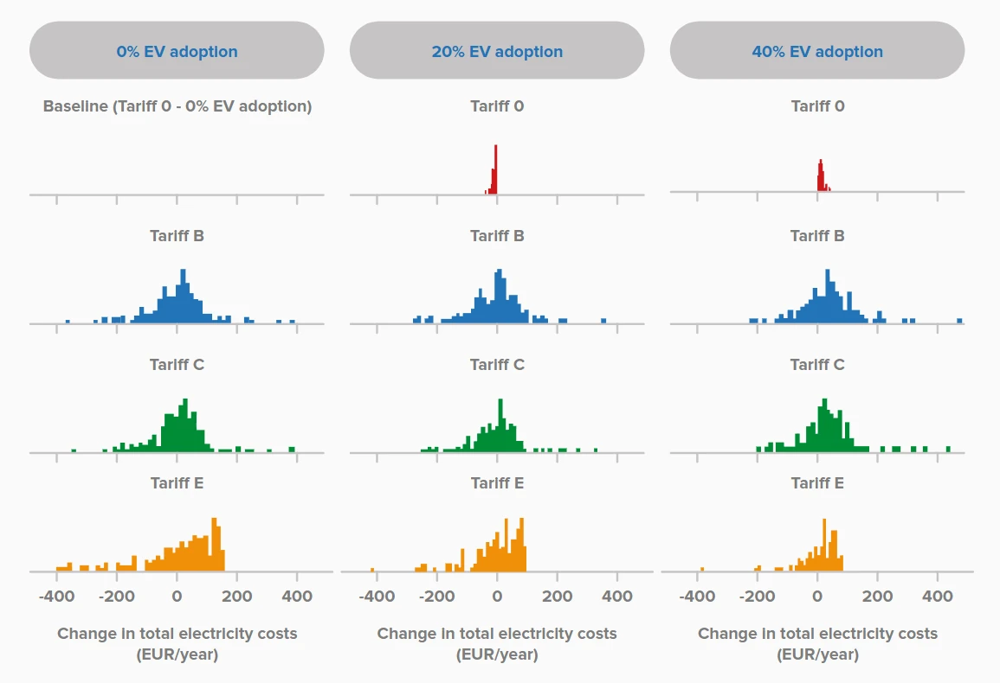

Success metric
Peak reduction, congestion hours, voltage improvement, avoided reinforcement, losses, or total system cost.
Tariff design mechanism · review dimension
How will the tariff be tested, monitored, and revised after implementation?
Clear definition
Evidence and performance define the metrics, counterfactuals, monitoring period, and governance used to determine whether the tariff achieves a network benefit and whether unintended effects require redesign.
A tariff can appear effective because consumption changes, even when the change is unrelated to the signal or creates costs elsewhere. Credible evaluation requires a clear counterfactual and network-level performance measures.

Design choices
A reviewer should be able to identify which option is selected, why it is selected, who decides it, and how it is implemented.
Peak reduction, congestion hours, voltage improvement, avoided reinforcement, losses, or total system cost.
What would have happened under the previous tariff or a credible alternative.
Pilot, seasonal review, annual assessment, or multi-year evaluation.
Thresholds for parameter adjustment, protection, suspension, or replacement.
Practical example
After introducing a time-of-use charge, evening demand falls by 8%. However, mild weather explains half the reduction and a new morning peak appears. A proper evaluation separates these effects before claiming network value.
The mechanism is credible only when the selected design can be explained in plain language and linked to a verifiable network, regulatory, commercial, or customer outcome.
Stakeholder implications
Publish network outcomes and explain causal attribution.
Require independent evaluation and transparent redesign criteria.
Understand whether business models remain stable under future updates.
See whether promised benefits and protections were delivered.
Questions for reviewers
Evidence expected
Feedback on evidence and performance
Please comment specifically on the definition, design choices, stakeholder responsibilities, implementation feasibility, evidence requirements, and interaction with the other flexibility acquisition mechanisms.